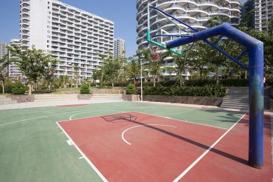
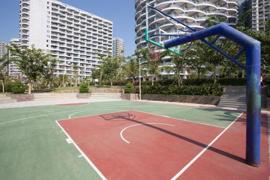

社区简介
社区地址：河北省石家庄市裕华区槐安东路136号
社区电话：027-825451209
青城小区环境优美、布局合理、功能齐全、舒适方便，是一个集科技、文化和生态于一体，是典型的具有绿色环保特色的高档住宅小区。小区位于石家庄市东郊，紧邻风景区，是河北省唯一一家被命名为“国家康居住宅示范工程”的小区。小区占地面积约为27万平方米，建筑面积约36万平方米，绿化占小区总面积43%，小区内有高层及多层住宅、商铺以及与之配套的幼儿园、小学、菜场公共设施组成。小区现有楼房86栋，住户2564户，常住人口7542人，流动人口182人。
青城社区现有工作人员13名，主要负责整个小区的基层党建、社会保障、计划生育、治安防范等各项工作。自小区2017年9月成立以来，在市、区、街道办的正确领导下，在辖区内有关企事业单位和广大居民的积极支持帮助下，社区立足于自身，本着坚持以人为本，为人民服务的原则，努力为社区居民办好事，办实事。
青城社区现有工作人员13名，主要负责整个小区的基层党建、社会保障、计划生育、治安防范等各项工作。自小区2017年9月成立以来，在市、区、街道办的正确领导下，在辖区内有关企事业单位和广大居民的积极支持帮助下，社区立足于自身，本着坚持以人为本，为人民服务的原则，努力为社区居民办好事，办实事。
 
